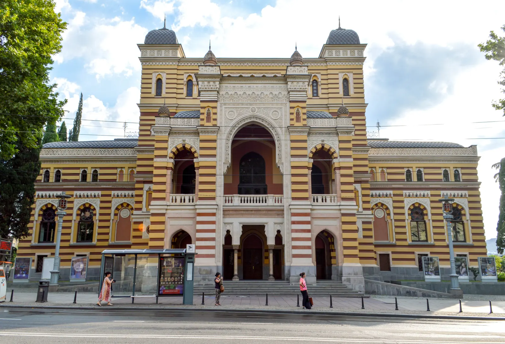
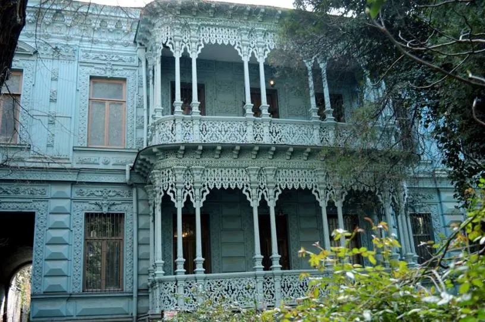
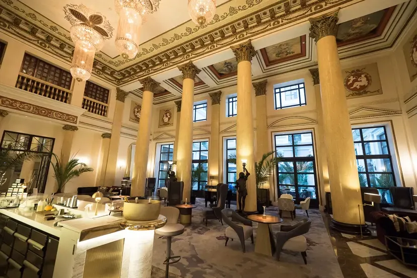
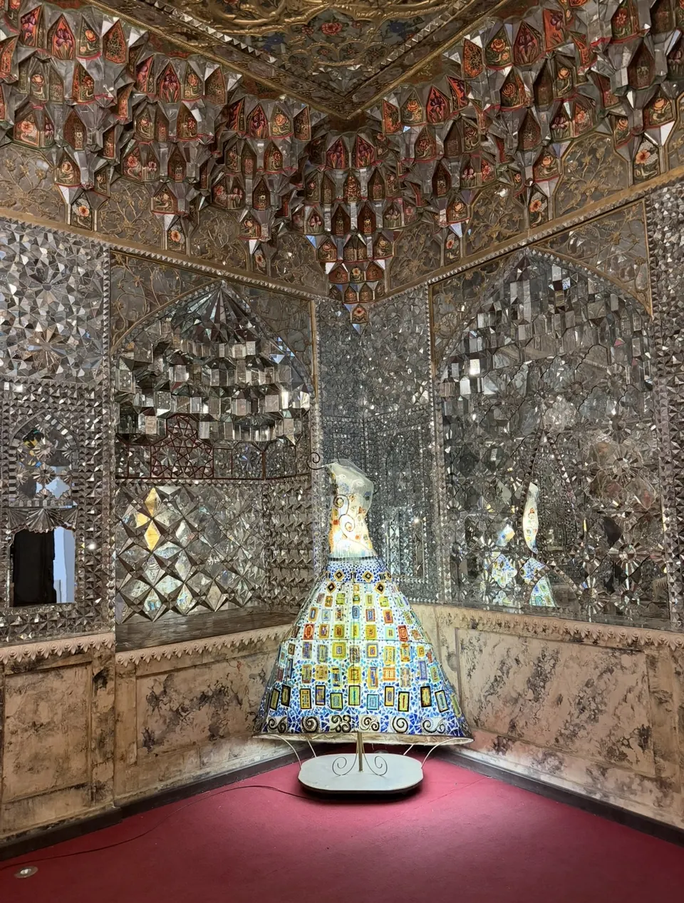

Программа
Памятник Шота Руставели. Дом Васила Габашвили (личного врача Сталина) во дворах. Улица Грибоедова и дворец Аршакуни (зеркальная комната). Тбилисская опера, Театр Руставели, кафе «Химерион» («если нам повезёт»), отель Tbilisi Marriott. Храм Кашуэти (фрески Ладо Гудиашвили), дом-музей Гудиашвили («если удача будет на нашей стороне»). Бывшая резиденция наместника Российской империи — независимость трёх стран, мать Сталина, вторая зеркальная комната.
Маршрут
- Памятник Руставели
- Дворец Аршакуни
- Опера
- Храм Кашуэти
- Дом-музей Гудиашвили
Что входит
- услуга гида
Оплачивается отдельно
- билет во дворец Аршакуни — 12 лари с человека
- билет в музей Ладо Гудиашвили — 15 лари с человека



